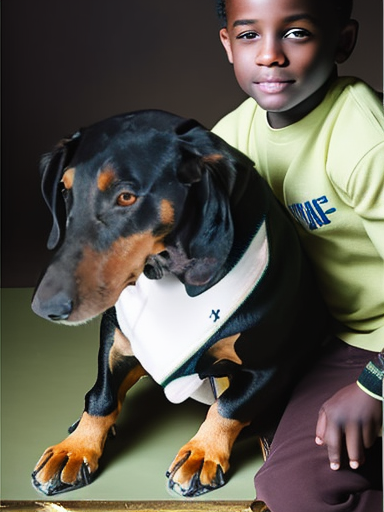

La vida de Akira

Akira, el extraordinario superhéroe Doberman, nació en el pintoresco país de Perú y orgullosamente llamó a la histórica ciudad de Cajamarca su hogar. Sin embargo, el heroísmo de Akira se extendía mucho más allá del escenario del concurso. Utilizó sus talentos únicos para brindar consuelo a los niños en hospitales locales y para ayudar en audaces misiones de búsqueda y rescate en el accidentado terreno de los Andes.

Desde el principio, quedó claro que Akira no era un perro común. Tenía el hábito distintivo de morder juguetonamente una de sus cuatro patas, adaptándose sin esfuerzo a esta peculiaridad única al caminar con gracia sobre las tres restantes. El viaje de Akira hacia la fama y el heroísmo fue guiado por su amoroso dueño, Jose Maria quien reconoció el potencial extraordinario en su compañero canino y lo nutrió con devoción inquebrantable.
Enclavada entre las impresionantes montañas de los Andes, Cajamarca fue el escenario donde los talentos de Akira brillarían. Hizo su debut en la escena local de concursos de perros, cautivando a las audiencias con sus impresionantes trucos y su encantadora actitud. La lista de logros de Akira creció a medida que se convirtió en una sensación regular en el "Peruvian Paws Fiesta" anual, reclamando títulos prestigiosos como "Artista Más Versátil" y "Campeón de Paws Fiesta" en múltiples ocasiones.
El vínculo inquebrantable de Akira con Jose Maria fue un testimonio de la profunda conexión entre el hombre y el perro, ya que su lealtad y amor por su dueño permanecieron firmes a lo largo de su heroico viaje. Hoy, el legado de Akira perdura, no solo en los trofeos y los elogios que ganó, sino en los corazones de la gente de Cajamarca y de todo el Perú, donde es celebrado como un símbolo de resistencia, compasión y talento extraordinario.